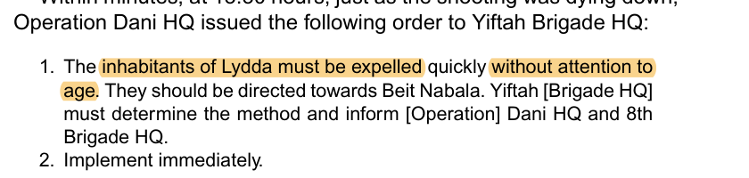
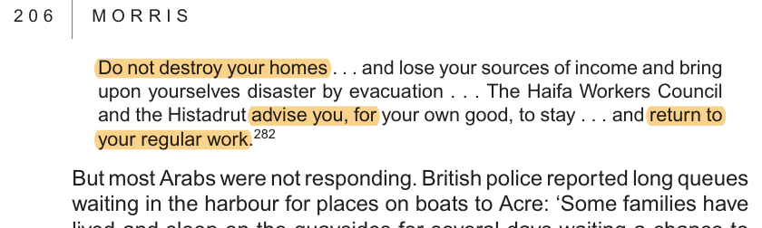
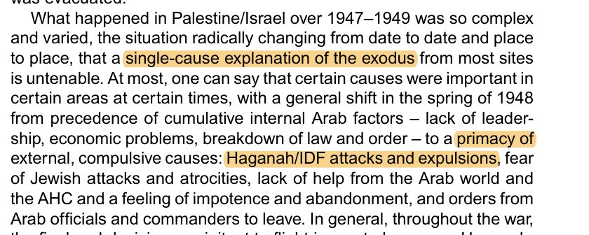

Roughly 700,000 Palestinian Arabs became refugees in 1947–49. This ledger is the village-level record beneath that number: 376 datable depopulation, flight, expulsion and retention events mined from Morris's archival narrative. Each displacement row carries a Morris-derived primary-cause code — M military assault, E expulsion, C a neighbouring fall, F fear, W atrocity-fear, A Arab orders; the R “kept in place” lane and the combatant-status fields are project-coded and separately documented, not Morris's. Filter by cause or sub-district, sort the columns, and click any row for the Morris passage. Companion: the summary & method page.
Morris codes each village's departure and states that “a single-cause explanation of the exodus from most sites is untenable”; he assigned a primary code per village (Map 2) but never totalled them. This totals his own codes — across three measures, because the unit and the weighting are different questions. Headline = final depopulations (the comparable unit), by event.
| Cause of departure | final depop. (201) | all displ. (335) | all, by people |
|---|---|---|---|
| Military assault (M) | 41% | 35% | 57% |
| Expulsion (E) | 26% | 30% | 29% |
| Fear (F) | 15% | 16% | 13% |
| Nearby-fall (C) | 8% | 7% | <1% |
| Arab-order (A) | 3% | 7% | <1% |
| Atrocity-fear (W) | 4% | 3% | <1% |
Denominator: 376 rows = 335 displacement + 41 retention. The 335 displacement rows split by event_type: 201 final depopulations, 49 partial (women/children evacuations, surviving mixed towns), 38 postwar-clearance (1949–50 anti-infiltration), 28 policy/multi-village aggregates, 15 temporary (fled then returned), 4 remnant-expulsions. Final depopulations is the comparable unit — a partial women-and-children evacuation should not count equal to a village permanently emptied. Restricting to it raises M (35→41%) and halves A (7→3%): most Arab-order events were partial dependents-evacuations, not final depopulations. By people (all displacement) covers only the 80 rows Morris numbers and is carried by the big urban falls — indicative, not definitive. Filter the ledger by event type below. Codes are Morris's; every row's anchor phrase is verbatim in his text.



A ledger of Arab displacement records only what emptied Arab localities — but 1948 was a bilateral war. Before 15 May, Palestinian irregulars and the Arab Liberation Army were on the offensive: ambushing convoys (the Hadassah medical convoy, the Lamed-Heh relief platoon, the Etzion-bloc convoys), besieging Jewish Jerusalem, attacking settlements — that offensive is mapped in its own ledger of anti-Jewish violence (126 attacks). After 15 May the armies of Egypt, Jordan, Syria, Iraq and Lebanon invaded. Many localities in the ledger had armed defenders, ALA garrisons or National Guard firing on Jewish traffic — the “military assault” lane is combat in that war, not unprovoked attacks on passive villages. (A documented subset of it was fire aimed at civilians to induce flight — Jaffa, Haifa — which is why that lane is annotated, not merged with expulsion.)
And displacement ran both ways. Morris: “All the Jewish settlements conquered by the invading Jordanian, Syrian, and Egyptian armies — about a dozen in all … were razed after their inhabitants had fled or been incarcerated or expelled.” Roughly 6,000 Jews died in the war — about 1% of the Yishuv. The communities in the table below are the symmetric record, held to the same provenance discipline (Morris, 1948). This page measures the Arab-displacement side of the war; it is not a measure of the war's blame.
| Cause of departure | events | militarily active | no military activity | unknown |
|---|---|---|---|---|
| Expulsion (E) | 101 | 36% | 43% | 19% |
| Military assault (M) | 120 | 70% | 20% | 10% |
| Atrocity-fear (W) | 12 | 41% | 50% | 8% |
| Nearby-fall (C) | 24 | 58% | 37% | 4% |
| Fear (F) | 54 | 38% | 44% | 16% |
| Arab-order (A) | 24 | 37% | 33% | 29% |
| Retention / kept (R) | 41 | 51% | 43% | 4% |
The assault lane is mostly combat; the expulsion lane mostly is not — and that contrast is the empirical case for keeping them apart. Military assault (M) was 70% against militarily-active localities — 62% had documented defenders (35% local militia, 27% an organized force), and 45% were attack-bases firing on traffic or roads. So for the majority, "military assault" genuinely was combat in a two-sided war. But its mirror, expulsion (E), runs the opposite way: only 36% active vs. 43% affirmatively inactive — roughly 44 documented expulsions of villages with no military activity at all. Deliberate removal disproportionately hit the quiet villages. Two honesties kept in view: even where defenders existed, only 31% of M-villages actually resisted (most fled rather than fought), and combatant presence explains the operation against the fighters, not the removal of the non-combatants; and only 10% of all 376 flags rest on an attacker-sourced claim — the rest are neutrally or independently attested. Filter the ledger by combatant status and open any row for the per-village evidence.
| Community | Front | Date | Taken by | Fate of the inhabitants | The site |
|---|---|---|---|---|---|
| Kfar Etzion (Etzion bloc) | Jordanian | 13 May | Arab Legion + ~1,000 militiamen | Massacre after surrender — ~150 killed (106 men + 27 women murdered after assembling under a white flag); a handful survived | Razed — “not one stone upon another” M.170 |
| Massuot Yitzhak · Ein Tzurim · Revadim | Jordanian | 14 May | Arab Legion | Orderly surrender; 357 Etzion POWs to Transjordan (held to war's end); Legion shielded them from the mob | Razed M.171 |
| Jewish Quarter, Old City | Jordanian | 28 May | Arab Legion + irregulars | 213 defenders (39 dead, 134 wounded); 290 male POWs (⅔ noncombatants) + 51 wounded; ~1,200 civilians escorted out at Zion Gate | Razed — houses blown up, Hurva & synagogues destroyed, Torah scrolls burned M.219 |
| Atarot | Jordanian | 14–16 May | irregulars + Legion | Attacked and abandoned; defenders withdrew to Mount Scopus | Razed M.217 |
| Neve Yaakov | Jordanian | 14–16 May | irregulars + Legion | Attacked and abandoned; defenders withdrew to Mount Scopus | Razed M.217 |
| Beit HaArava | Jordanian | 17–20 May | abandoned (untenable) | Evacuated — women/children by air, the rest by sea to Sodom | Razed M.217 |
| Kalia | Jordanian | 17–20 May | abandoned (untenable) | Evacuated south to Sodom | Razed M.217 |
| Gezer | Jordanian | 10 Jun | Arab Legion + irregulars | Overrun after a 4-hr fight (“Deir Yassin, Abu Shusha”); 29 killed, 1–2 executed after surrender, most captured | Looted, retaken by Yiftah the same evening M.230 |
| Yad Mordechai | Egyptian | 23–24 May | Egyptian army | Held 5 days under siege, then broke out on foot; some dead; 2 evacuees + a wounded man bayoneted | Leveled; later recovered M.239 |
| Nitzanim | Egyptian | 6–7 Jun | Egyptian army | Overrun — 33 dead, 16 wounded, then 105 surrendered; 3–4 murdered after surrender (incl. radiowoman Mira Ben-Ari) | Devastated; later recovered M.244 |
| Kfar Darom | Egyptian | 8–9 Jul | abandoned (earlier assaults repulsed) | Lone outpost behind Egyptian lines; defenders slipped out by night to Israeli lines | Razed (ruins only) M.278 |
| Mishmar Hayarden | Syrian | 10 Jun | Syrian army | Fell after a fierce fight (two earlier assaults repulsed); ~2 dozen taken POW | Held by Syria — the lasting Syrian enclave, kept through the armistice M.257 |
| Masada · Sha'ar Hagolan | Syrian | 18–19 May | abandoned ahead of advance | Abandoned without HQ permission; members fled to Kibbutz Afikim; sites looted | Looted, later recovered M.253–4 |
Morris's summary (1948, p. 409): the settlements the invading armies overran — “about a dozen in all … were razed after their inhabitants had fled or been incarcerated or expelled.” Of them, Mishmar Hayarden stayed Syrian-held; five (Gezer, Yad Mordechai, Nitzanim, Masada, Sha'ar Hagolan) were later recovered by Israel; the rest — the Etzion bloc, the Old City Quarter, Atarot, Neve Yaakov, Kalia, Beit HaArava — stayed on the Jordanian side, and the West Bank held no Jews until 1967. “M.” = Morris, 1948, printed page.
Seven cause-lanes. Each event is filed under Morris's primary cause-code: expulsion (ordered/driven out), military assault (fled under attack), atrocity-fear (massacre-news/rumour), nearby fall, fear, Arab orders, and a kept-in-place lane for the documented retention cases — the symmetric counterpart, not a cause of flight.
The retention lane matters. Morris records, and so does this ledger, the cases where Jewish authorities urged or allowed Arabs to stay (Haifa's Histadrut leaflet; Nazareth's countermanded order; the Druze and Christian villages of Operation Hiram; Abu Ghosh, al-Fureidis, the central-Galilee Muslim villages that did not resist). Reading the red lanes without the green one is half the war.
The community split. In the October–November 1948 Galilee operations the treatment forks sharply by community and by whether a village resisted: Druze and Christian villages were largely retained (Maghar, Fassuta, Rama's Christians, Mi'ilya), most Muslim villages that resisted were depopulated, and several documented massacres (Safsaf, Saliha, al-Dawayima, Eilabun) drove flight — captured here under assault/atrocity-fear with the toll in the row.
Single-cause untenable. Morris insists most departures were multi-causal; each row's cause-note carries that nuance. The lane is the primary code, not the whole story.
Force chips. A secondary tag marks who acted or how it happened — IDF / Haganah, Palmah, Irgun / Lehi, Weitz / JNF, fled (self), Arab command, kept in place.
Method & caveats: Morris is the spine because the standard village register (Khalidi, All That Remains) is a gazetteer that itself depends on Morris for dates and causes; here the events come straight from his archival narrative. Population figures, where Morris gives them, trace to the Mandate Village Statistics 1945. The cause-percentages are this project's count of Morris's codes — not a total he asserts. Full method on the companion page; provenance in the research repository (topic.1948_refugee_causation).